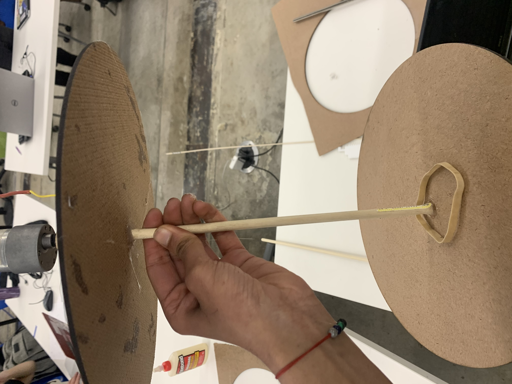
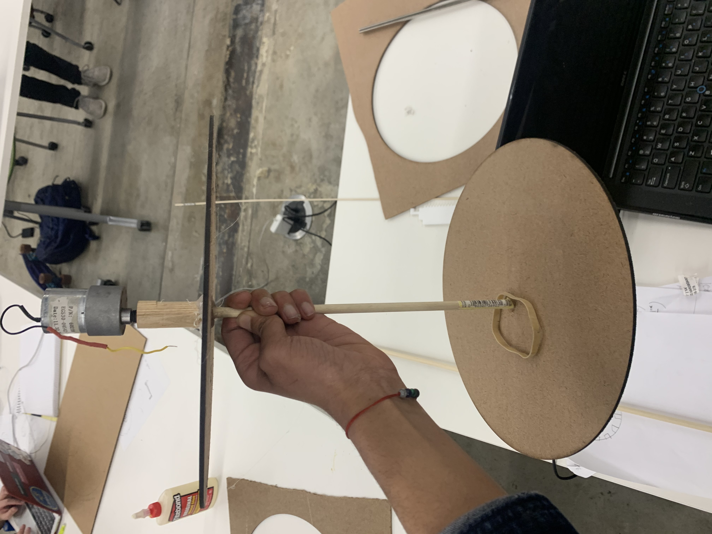
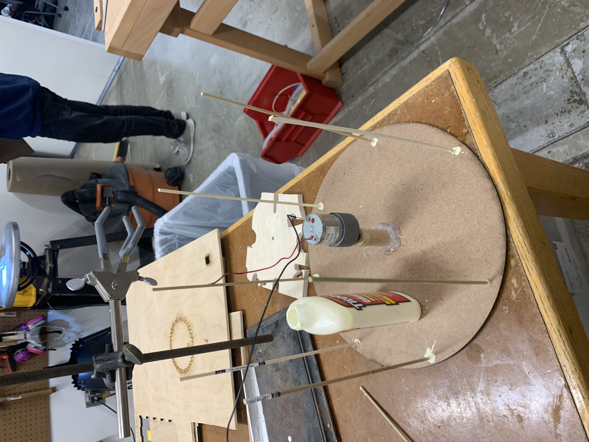

Kinesthetic Sculpture
Meet my parents. They live in India and New Jersery
This past weekend was their anniversery, and they are visiting me this next weekend, so I wanted to make them something for their anniversery gift. I decided on a spinning carousel filled with pictures of them and our family.
Step 1: The build
The first step of this was to build the actual carousel structure. To do this, I used sheets of wood and laser cut two even circles for the top and the bottom. I then drilled a hole through both and glued a dowel into place. I also got some practice using the saw to cut out pieces of wood for my circles.
My two major takeaways from this step were 1) that laser cutting wood can be finnicky - the settings need to depend on experience, not necessarily on what's listed and 2) when hotgluing, stability is key and always make sure to account for stability during the drying process.
Step 2: The motor
After designing these base carousel pieces, I wanted to use a motor to power this. to do so, I drilled a hole to fit the motor pin into another wooden cylinder, and added heat shrink tubing around the motor to really squeeze it into the wooden cylinder. I then attached this wooden cylinder to the end of the dowel of my carousel. This would spin the carousel around the center dowel.
BUT WAIT!!! When I initially attached the motor, it went too fast! This caused my carousel to snap in half!
Step 3: The ReTry and Decoration
After this mishap, I realized that I needed to slow the motor down. I did this by lowering voltage and adding a large cylinder to the motor to spread out the effects of it. This also helped make it easier to hold the motor and the entire carousel.

I now need to add pictures of my parents and make this prettier. I think I'll laser cut some cool horse shapes for this too! Stay tuned for more!